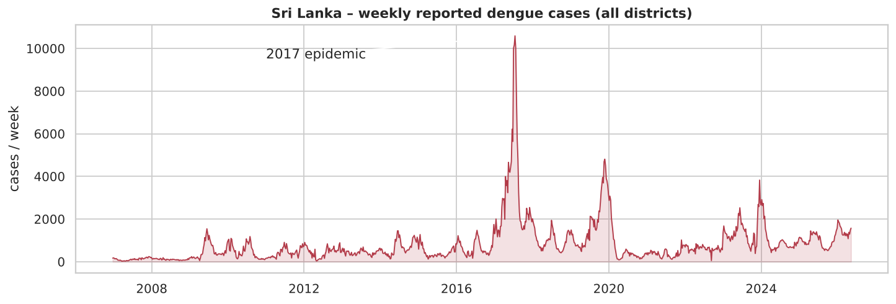
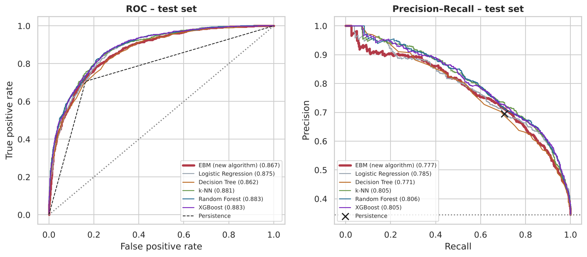
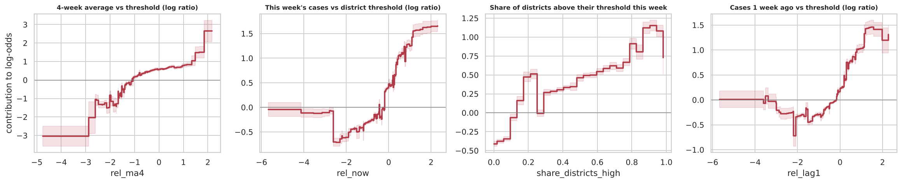
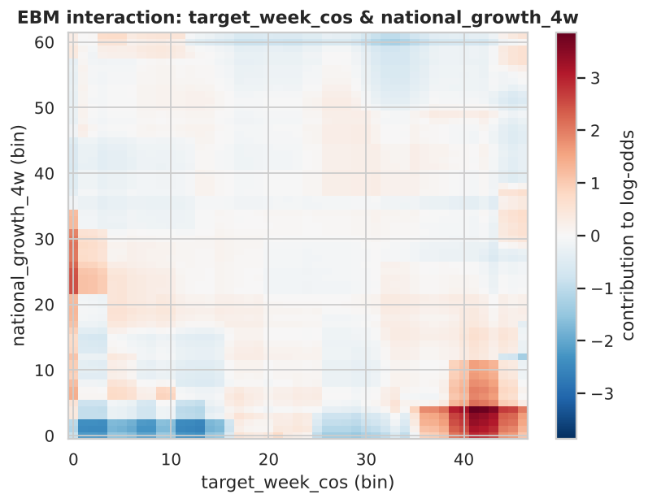
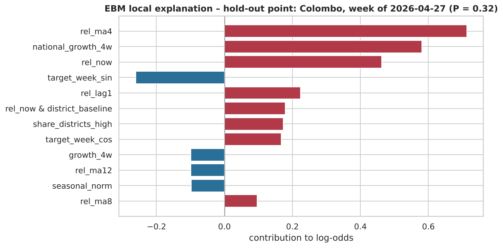
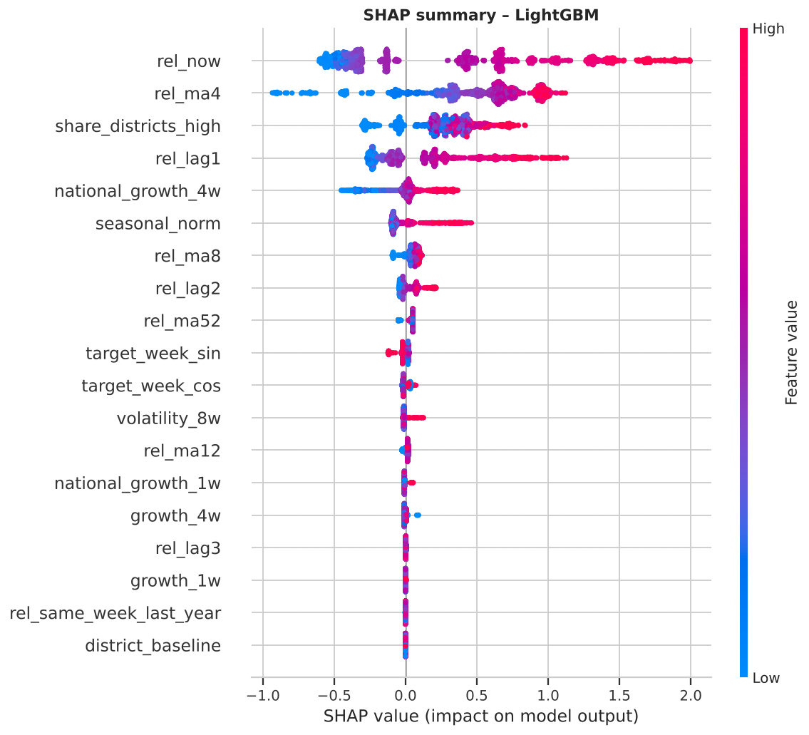
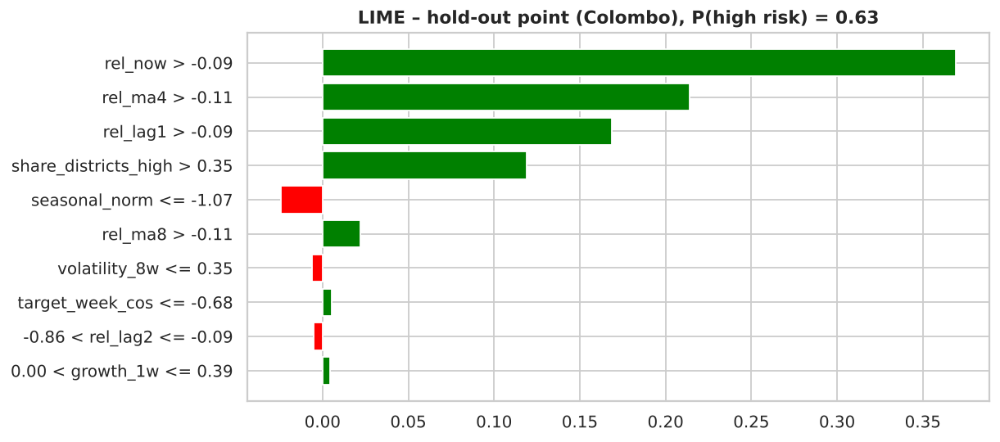
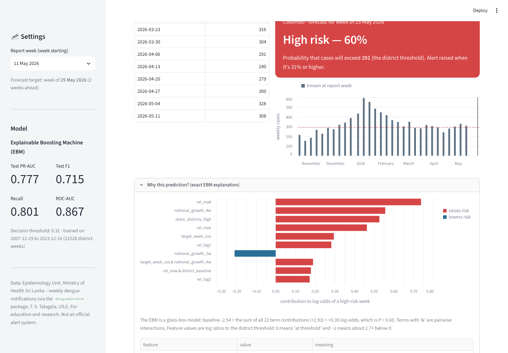

Two-week-ahead prediction of high-transmission dengue weeks with an Explainable Boosting Machine (EBM)
Summary. Using 20 years of official weekly dengue notifications for all 26 Sri Lankan health areas (Epidemiology Unit, Ministry of Health), I built a classifier that, at the end of each week, predicts whether a district’s cases two weeks later will exceed that district’s own high-transmission threshold. After finding and fixing three hidden data-quality problems, I engineered 19 leakage-free, scale-free features. The proposed model is an Explainable Boosting Machine (EBM), an interpretable generalized additive model with pairwise interactions that was not covered in lectures. It was tuned with Optuna under time-series cross-validation and compared with five standard models (logistic regression, decision tree, k-NN, Random Forest, XGBoost). On an untouched 2024–2026 test period EBM reaches ROC-AUC 0.867, PR-AUC 0.777 and recall 0.801, against PR-AUC 0.592 for a persistence baseline. It matches the best black-box model in cross-validation and trails it by about 0.03 PR-AUC on test, while explaining every prediction exactly. The model is served in a Streamlit app with per-prediction explanations and retrained through an Azure ML / GitHub Actions pipeline.
Dengue is endemic in Sri Lanka and causes large, recurring epidemics. The dataset records 174,687 cases in 2017 and 70,918 in 2023. Medical Officers of Health and Public Health Inspectors respond with vector control: fogging, larval-source reduction and community clean-ups. These need lead time. A district-level warning that flags an approaching high-transmission week two weeks ahead (one week covers reporting delay, one week covers mobilisation) helps teams act before cases peak.
The Epidemiology Unit publishes a Weekly Epidemiological Report (PDF, epid.gov.lk) listing notified dengue cases for the 26 RDHS areas (25 districts plus Kalmunai). The open-source denguedatahub package (Dr. T. S. Talagala, University of Sri Jayewardenepura; GPL-3) downloads these reports and extracts the tables, and I exported its srilanka_weekly_data object to CSV. The data cover 23 Dec 2006 – 17 May 2026: 26,311 rows, with columns year, week, start.date, end.date, district, cases.
The target high_risk is 1 if the district’s cases in week t+2 exceed its 75th percentile of weekly cases over 2012–2021, so each district is judged on its own scale. Nineteen features are engineered, all known at week t and expressed as log ratios to the district threshold: current level and lags 1–3; 4/8/12/52-week averages; 1- and 4-week growth; 8-week volatility; last year’s level in the target week; a seasonal norm; sine/cosine of the target week; national growth; the share of districts already above threshold; and the district’s baseline burden. After cleaning there are 26,260 district-weeks.

The EDA showed a hundred-fold difference in level between districts, monsoon seasonality (peaks in June–July and December–January), strong autocorrelation (lag-2 above 0.8), and a positive rate that shifts strongly between years. It also exposed three data-quality problems in a file with no missing values:
Real epidemic peaks were kept. Skew was handled with log1p and threshold-relative features. EBM and the tree models need no scaling; logistic regression and k-NN use a StandardScaler inside a pipeline. There are no categorical inputs to encode. Ethical data use: the data are aggregate public counts per health area, with no personal information, so no individual can be identified.
The EBM (Lou & Caruana et al., 2012–13; Nori et al., InterpretML, Microsoft Research, 2019) is a generalized additive model with pairwise interactions (GA²M): logit P(y=1|x) = β0 + Σj fj(xj) + Σ(i,j) fij(xi, xj). Each shape function fj is learned by cyclic gradient boosting: in each round the algorithm visits every feature in turn and fits a tiny tree (2–4 leaves) to the residuals using only that feature, with a small learning rate, over thousands of rounds. Bagging smooths the curves and gives error bands, and the FAST procedure then adds the strongest pairwise interactions. The final model is a sum of 1-D and 2-D lookup tables, so every prediction decomposes exactly into per-feature contributions: it is a glass-box model.
| Property | Logistic regression | Decision tree | k-NN | Random Forest / XGBoost | EBM (new) |
|---|---|---|---|---|---|
| Model form | linear sum of features | one tree | stored examples | many trees on all features | additive per-feature functions + a few pairs |
| Non-linear effects | no | coarse steps | implicit | yes | yes, a smooth learned curve per feature |
| Interactions | none | unrestricted | implicit | unrestricted, hidden | selected pairs, each visible as a heat map |
| Interpretability | coefficients | only if shallow | none | post-hoc SHAP/LIME (approximate) | exact, built-in global and local |
| Needs scaling | yes | no | yes | no | no |
Why it was selected. The problem has threshold-like non-linear effects, a few meaningful interactions and collinear lag features, and the users (health officials) must be able to see and trust why a district is flagged. EBM promises accuracy close to black-box ensembles while remaining fully interpretable. The comparison in §3 tests that claim. The standard models taught in lectures are used only as comparisons.
The split is chronological and purged: train 2007–2021 (18,850 rows), validation 2022–2023 (2,678), and test January 2024 – May 2026 (3,145), which was never used for any decision. Rows whose t+2 target crosses a boundary are removed, and one further data point (the latest Colombo week with a known outcome) was held out for the inference demonstration. Hyperparameters were tuned with Optuna (TPE) by maximising the mean PR-AUC over five expanding-window folds (validation years 2019–2023). Each model’s decision threshold maximises F1 on its out-of-fold predictions.
EBM (20 trials): learning_rate 0.003–0.1, max_leaves 2–4, min_samples_leaf 2–100, max_bins 32–512, interactions 0–20, smoothing_rounds 0–500, with 4 outer bags during the search and 8 for the final model. Selected values: learning_rate 0.079, max_leaves 4, min_samples_leaf 11, max_bins 39, interactions 3, smoothing_rounds 50. The most influential settings were max_bins (0.38) and interactions (0.24). Coarse bins and only three interactions give a smooth, low-variance model.
| Model | Default CV PR-AUC | Tuned CV PR-AUC | Key tuned settings |
|---|---|---|---|
| EBM (new algorithm) | 0.784 | 0.786 | see above (3 interactions, 39 bins) |
| XGBoost | 0.754 | 0.787 | max_depth 2, 350 trees, learning_rate 0.051 |
| Random Forest | 0.772 | 0.785 | 300 trees, max_depth 7, min_samples_leaf 24 |
| Logistic regression | 0.778 | 0.779 | C 0.067, L2 |
| k-NN | 0.652 | 0.767 | 267 neighbours, distance-weighted, Manhattan |
| Decision tree | 0.487 | 0.755 | max_depth 13, min_samples_leaf 137, balanced |
Accuracy is misleading with imbalanced, shifting classes, so the main metric is PR-AUC. ROC-AUC, F1, precision, recall and week-block bootstrap 95% intervals are also reported.
| Test set (Jan 2024 – May 2026) | ROC-AUC | PR-AUC | F1 | Precision | Recall | Bal. acc. |
|---|---|---|---|---|---|---|
| EBM (new algorithm) | 0.867 | 0.777 | 0.715 | 0.645 | 0.801 | 0.785 |
| Random Forest (standard) | 0.883 | 0.806 | 0.730 | 0.676 | 0.793 | 0.797 |
| k-NN (standard) | 0.881 | 0.805 | 0.730 | 0.631 | 0.864 | 0.800 |
| XGBoost (standard) | 0.883 | 0.805 | 0.732 | 0.657 | 0.826 | 0.800 |
| Logistic regression (standard) | 0.875 | 0.785 | 0.720 | 0.673 | 0.774 | 0.788 |
| Decision tree (standard) | 0.862 | 0.771 | 0.704 | 0.632 | 0.793 | 0.775 |
| Persistence baseline (next = now) | 0.772 | 0.592 | 0.700 | 0.695 | 0.706 | 0.772 |
| Seasonal naive (same week last year) | 0.585 | 0.394 | 0.472 | 0.442 | 0.506 | 0.585 |

What the results indicate. (i) EBM is a useful early warning: compared with persistence, PR-AUC rises from 0.59 to 0.78 and recall from 71% to 80%, so about one in three outbreak weeks that persistence misses is caught two weeks ahead. (ii) In cross-validation, EBM (0.786) is within 0.001 of the best black box (XGBoost 0.787) and ahead of Random Forest. (iii) On the more epidemic test period, Random Forest, XGBoost and k-NN reach about 0.805 PR-AUC, about 0.03 above EBM. The bootstrap shows the gap is real, although F1 differs by only 0.015. This is the measured cost of interpretability, accepted in exchange for exact explanations. EBM still beats the interpretable decision tree, and beats logistic regression in cross-validation. (iv) The held-out Colombo week (27 Apr 2026; 300 cases) was predicted HIGH (P = 0.32 against a 0.31 threshold). Two weeks later Colombo reported 308 cases against a threshold of 291, so the prediction was correct.
To check whether another new algorithm would do better, eight further algorithms that were not covered in lectures and are not deep learning were scored with the same expanding-window CV. The model was chosen by CV, not by test score, because selecting on the test period would leak it into model selection. Test PR-AUC is shown for reference only.
| Algorithm (not in lectures) | CV PR-AUC | Test PR-AUC | Interpretable | Note |
|---|---|---|---|---|
| Stacking (EBM + LR + kNN + RF + XGB → LR) | 0.789 | 0.804 | No | built from lecture models |
| EBM (chosen) | 0.786 | 0.777 | Exactly | glass box |
| NGBoost (natural-gradient boosting) | 0.785 | 0.795 | No | a gradient-boosting variant |
| RuleFit (rules + lasso) | 0.783 | 0.796 | Yes | 10× slower |
| Extra Trees | 0.782 | 0.805 | No | Random Forest variant |
| Spline GAM (pyGAM) | 0.782 | 0.794 | Yes | no interactions |
| Gaussian Naive Bayes | 0.756 | 0.758 | Partly | |
| LDA / QDA | 0.729 / 0.677 | 0.714 / 0.711 | Partly |
On the selection criterion, EBM ranks second of nine. Only stacking is higher, by 0.003, which is within fold-to-fold noise; stacking is also a black box made of lecture models. Seven EBM refinements were tested the same way: more interactions (10 or 20), finer bins, a slower learning rate, recency weighting and monotone constraints. Their CV PR-AUC ranged from 0.782 to 0.788, all within ±0.005 of the tuned model, so the tuned EBM was kept. Several alternatives score about 0.02–0.03 higher on the test period, which suggests smoother models adapt slightly better to the recent epidemic regime. This is noted as a limitation, but it was not used to switch models. (Scripts: scripts/other_algorithms.py and scripts/ebm_cv_experiments.py.)



What the model has learned (22 terms: 19 shape functions and 3 interactions). The forecast is driven mainly by the 4-week average (importance 0.81) and this week’s level (0.51) relative to the district threshold. Both have monotone, S-like curves: strongly negative when cases are far below normal, rising steeply around the threshold and saturating above it. Next come the share of districts already high (0.44), where nationwide waves lift every district by up to +1.4 log-odds, last week’s level (0.40), national 4-week growth (0.30) and season. EBM found three interactions. The strongest is this week’s level × district burden: being above threshold is a stronger signal in high-burden districts such as Colombo and Gampaha, where high counts persist, than in small districts, where one high week is often noise.
Local explanation. For the held-out Colombo week, the baseline −2.54 log-odds plus contributions (4-week average +0.71, national growth +0.58, this week +0.46, last week +0.22, the Colombo interaction +0.18, the national share +0.17, late-May season −0.26, among others) gives −0.75 log-odds, so P = 0.32. This decomposition is the model’s actual computation, not an approximation.


Model-agnostic checks. SHAP feature importance correlates with EBM’s own importance at Spearman 0.97. On the held-out point, SHAP has the same sign as the exact EBM contribution on all 10 of LIME’s top features, and LIME agrees on 9 of 10. Across five random seeds, LIME’s top features always include the same four core variables. LIME also explains a correct early warning (Hambantota, June 2025, P = 0.95) and a miss (Monaragala, May 2024, P = 0.20: a sudden outbreak with no early signal in the counts).
Alignment with domain knowledge. Dengue transmission persists over weeks (vector and virus cycles), epidemics are nationwide (serotype circulation), risk peaks after the south-west and north-east monsoons, and dense urban districts sustain transmission. The model encodes exactly these patterns, and as a glass box, each one can be inspected and challenged.
Limitations. There is no rainfall or temperature input (no open district-weekly series was available). EBM trails the strongest black boxes by about 0.03 PR-AUC on the test period, which is a real cost of interpretability. The 75th-percentile threshold is one of several reasonable definitions of “high transmission”. Probabilities are used as risk scores with a tuned threshold. Outbreaks with no early signal in the counts cannot be foreseen.
Data quality. Labels are reported cases, affected by testing, hospital access, reporting delays and disruptions such as COVID-19 in 2020–21. The three detected problems show that undetected errors may remain.
Bias and fairness. Performance is uneven. F1 is 0.88 in Gampaha and 0.84 in Galle, but 0.20–0.47 in Vavuniya, Mullaitivu, Kilinochchi and Badulla, where high weeks are rare. Used naively, the system would give weaker warnings to areas that already have fewer resources. Districts with better laboratory access also report a larger share of true infections. Mitigations: per-district thresholds (used), transparent per-district evaluation, district-specific alert thresholds, and human review of every alert.
Real-world impact and ethics. Two weeks of warning can bring vector control forward. Errors have costs: 477 false alarms on the test period mean wasted insecticide, staff time and public trust, while 216 missed weeks mean late responses. The threshold favours recall. A glass-box model was chosen so that every alert can be audited, reducing automation bias. The tool must remain decision support for the Epidemiology Unit, not an official alert system. Only aggregate public data are used.
The model is saved with joblib and served by a Streamlit app: a national risk overview for any week; a district forecast where users enter or edit recent weekly counts and see the risk with its exact EBM term-by-term explanation; a held-out-point check; and model performance. MLOps on Azure: GitHub Actions runs the tests, registers the data as a versioned Azure ML data asset, trains the EBM on an auto-scaling Azure ML cluster (tracked with MLflow), registers the model only if it beats the persistence baseline (a quality gate), and redeploys the app on Azure App Service. The Azure pipeline runs on demand, which keeps costs within the student credit. Authentication uses OIDC with a managed identity.

A local, real and newly framed problem (district-level dengue early warning) was solved with a carefully validated pipeline and a new algorithm, the Explainable Boosting Machine. EBM catches four in five high-transmission weeks two weeks ahead and is within cross-validation noise of the best black-box model. On the test period it gives up about 0.03 PR-AUC in exchange for exact, auditable explanations, confirmed by SHAP and LIME. Adding district rainfall and district-specific alert thresholds are the next steps.